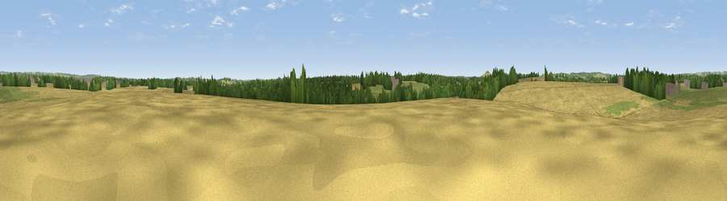

Piper's Hill
#40711 in England · top 83% of its area beats it · near MonxtonThe view, rendered

A 360° render of this exact spot computed from the terrain model, tree cover and land cover — summer colours, afternoon light, calibrated against photographs of famous viewpoints. Real trees, hedges and buildings will differ in detail.
The panorama
Grey silhouette: terrain skyline in each direction (720 bearings, Earth curvature and refraction included). Dashed green: skyline with trees (+15 m) and buildings (+8 m) as obstacles. Blue strip: how far the ground is visible on each bearing.
Where the view opens
Wedge length = distance to the farthest visible ground on that bearing (vegetation-aware). Rings at 10, 25 and 50 km.
What fills the view
52% cropland · 29% grassland · 16% woodland · 3% built-up
Angular shares of the visible panorama (visual magnitude), not map area. Landscape diversity 0.48 (0–1 Shannon).
Key numbers
More beautiful places nearby
The staircase of upgrades: each row has a higher view potential than everything closer. Driving times are estimates from straight-line distance, calibrated against real road routing — check an actual route before setting out.
| Place | Direction | Drive | Score |
|---|---|---|---|
| Bury Hill | ESE · 4 km | ~9 min | 40.9 |
| Viewpoint near Grateley | WSW · 5 km | ~12 min | 61.1 |
| Viewpoint near Cholderton | W · 11 km | ~21 min | 61.6 |
| Viewpoint near Bulford | W · 12 km | ~22 min | 70.3 |
| Gallows Down | NNE · 18 km | ~31 min | 75.6 |
| Beacon Hill | NE · 19 km | ~33 min | 76.7 |
| Martinsell viewpoint | NW · 23 km | ~38 min | 77.3 |
| Viewpoint near Berwick St John | WSW · 45 km | ~66 min | 78.2 |
51.20295, -1.55722 · source: osm peak · position refined by local search. Computed location — check access rights before visiting.